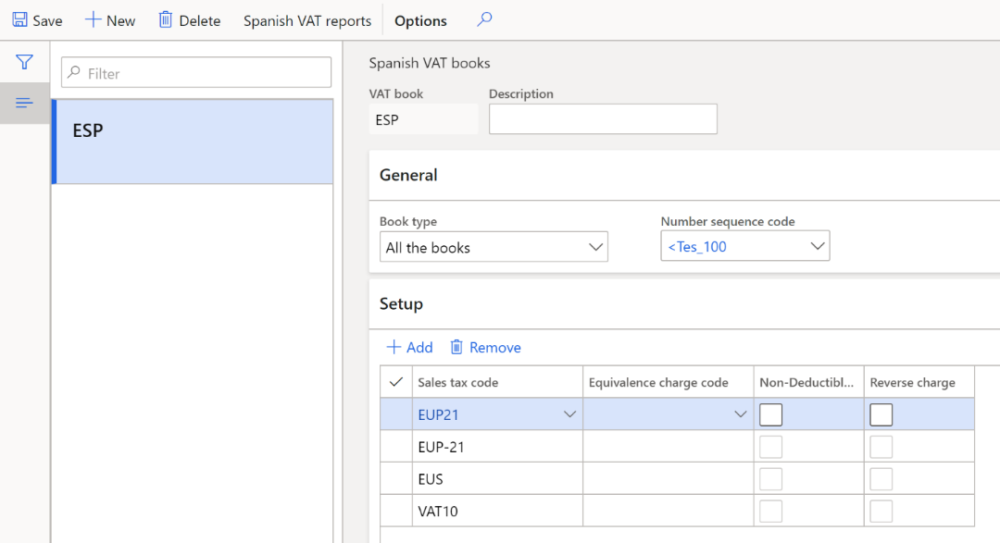
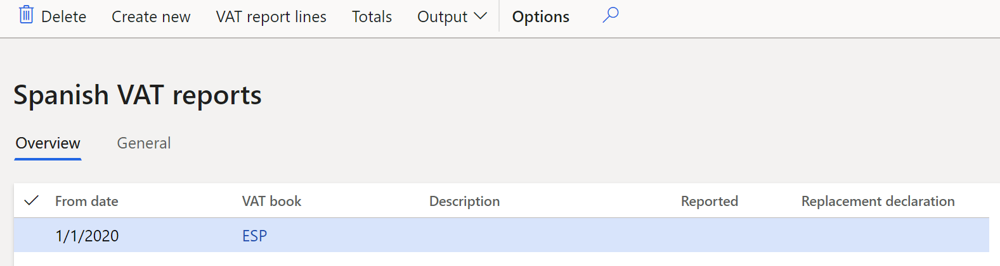
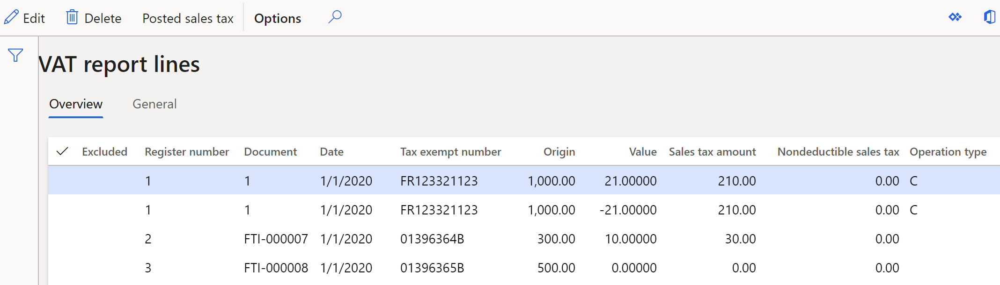
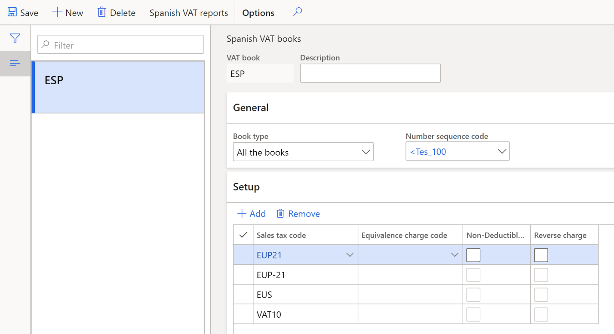
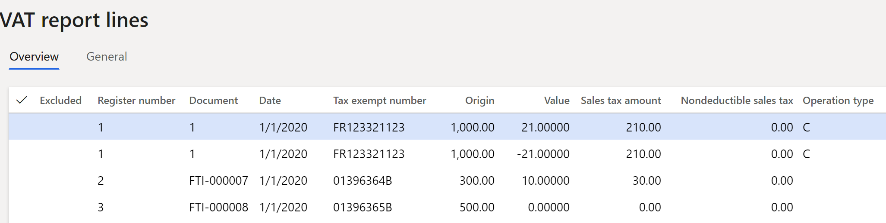
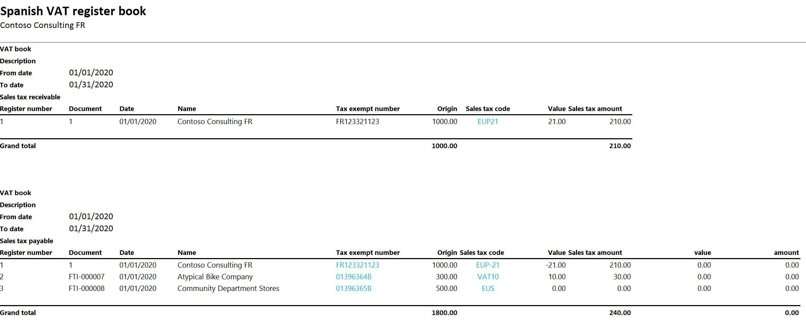

Report 340 for Spain
Report 340 contains information about all invoices and taxes that are related to the invoices that a company has issued or received during a specific period. Report 340 should be submitted to the tax authorities during the first 20 days after the reporting period. The reporting period can be a month or a quarter, depending on the size of the company. The report can be uploaded to the tax authorities' website, or it can be submitted by using a free software package that is available from the tax authorities.
The file format for Report 340 consists of two record types that are based on the file structure.
- Type 1 – This record type contains header information about the legal entity that generates the report.
- Type 2 – This record type contains information about the items and services that are purchased and sold by a legal entity during a specified period.
Entries that are included in Report 340
Report 340 includes the following entries:
- Sales entries – Value-added tax (VAT) report lines that correspond to sales invoices and project invoices.
- Sales credit memos (corrective invoices) – VAT report lines that correspond to corrective sales invoices.
- Purchase entries – VAT report lines that correspond to purchase invoices.
- Purchase credit memos – VAT report lines that correspond to corrective purchase invoices.
- Auto-invoices and auto-credit memos – VAT report lines that correspond to invoices and credit memos that are automatically created when goods or services are delivered by a vendor in the European Union (EU).
- Invoices that include equivalence charge – Equivalence charge is a type of Spanish sales tax.
- Invoices including different VAT% or equivalence charge percentage (EC%) – Invoices that have more than one VAT percentage or equivalence charge percentage.
Generate a Spanish VAT book and export the Report 340 ASCII file
- In Microsoft Dynamics Lifecycle Services (LCS), in the Shared asset library, download the latest version of the Electronic reporting (ER) configurations for the following VAT declaration format:
- VAT register book (ES)
For more information, see Download Electronic reporting configurations from Lifecycle Services.
- Go to Tax > Setup > Sales tax > Spanish VAT books.

- In the VAT book and Description fields, enter a name and description for the VAT book.
- In Book type field select a book type: Sales tax payable, Sales tax receivable, or All the books.
- In the Number sequence code field, select a number sequence code.
- On the Setup FastTab, select Add, and then set the following fields to set up the sales tax codes that should be included in the VAT book.
| Field | Description |
|---|---|
| Sales tax code | Select a sales tax code. |
| Equivalence charge code | Select a sales tax code for equivalence charge, if equivalence charge is applicable. |
| Non-Deductible VAT | Select the check box to activate non-deductible VAT for the sales tax code. If the VAT amount is non-deductible, purchasers aren't allowed to deduct it. |
| Reverse Charge | Select the check box to activate reverse charges for the sales tax code. Reverse charges are part of the VAT law. In some cases, goods or services are purchased from a foreign company. When reverse charges are activated, the VAT on these goods and services is payable by the recipient company, not by the foreign seller company. |
- Select Spanish VAT reports to open the Spanish VAT reports page.
- Select Create new to create a report.
- In the Spanish VAT list dialog box, set the following fields.
| Field | Description |
|---|---|
| VAT book | Select a VAT book. |
| Description | Enter a description of the VAT book. |
| Settlement period | Select a settlement period. |
| From date | Enter the first date of the sales tax settlement period. |
| Method of numbering | Select a numbering method: - Number sequence code: The number of the VAT report line equals the invoice number. - Number sequence code: The number of the VAT report line is taken from the number sequence that is defined in the Number sequence code field on the Spanish VAT books page. - 340 sequence: VAT report lines are numbered separately for purchases and sales. In both cases, the line numbers start from 1. |
| Start numbering (in the Manual numbering section) | Enter the first line number. |
| Template (in the Manual numbering section) | Enter the template for the line number. For example, enter #####. |
| Replacement declaration | Set this option to Yes to replace the previous declaration. |
| Rprevious declaration number | Enter the 13-digit number of the previous declaration. This field can be edited only if the Replacement declaration option is set to Yes. |
| Minimum payment account in cash | Enter the minimum cash payment amount that should be reported in the declaration. |
- Select OK to create a line on the Spanish VAT reports page, based on the criteria that you defined in the previous step.
- Review the line that is created.

Note
You can't change the values in the Settlement period, Method of numbering, and From date fields on the Spanish VAT reports page.
- On the General tab, set the following fields.
| Field | Description |
|---|---|
| Presentation type | Select the type of media to use for the exported file: - Telematic: Upload the report to the tax authorities' website, or submit the report by using the free software that is provided by the tax authorities. - CD-R: Send the report to the tax authorities on a CD-ROM. |
| Reported | Set this option to Yes to indicate that the declaration has been reported. The Presentation date field will be set to the current date, and the Reported by field will be set to the user's ID. |
| Contact person | Enter the name of the contact person. |
| Telephone | Enter the telelphone number of the contact person. |
| Document number of the declaration | Enter the four-digit document number. If you enter a number that has fewer than four digits, leading zeros will be added to create a four-digit number. For example, if you enter 1, the system automatically converts the value to 0001 and stores the new value. |
| Electronic code | Enter the 16-digit electronic code. This number is mandatory and is provided by the tax authorities. |
- Select VAT report lines to open the VAT report lines page. On this page, you can view the details of the VAT transactions that are transferred to the VAT report. If any of the lines that are automatically transferred don't have to be reported, you can edit or delete them.

- Select Posted sales tax to open Posted sales tax page. On this page, you can review the posted sales tax transactions.
- Close the Posted sales tax and VAT report lines pages.
- On the Spanish VAT reports page, select Totals to open the Totals page. On this page, you can view the following values:
- Number of operations – The total number of sales (or VAT payable) in the Deliveries section and the total number of purchases (or VAT receivable) in the Acquisitions section.
- Amount – The total amount of sales (or VAT payable) in the Deliveries section and the total number of purchases (or VAT receivable) in the Acquisitions section.
- Select Output > Export to ASCII file to open the Export to ASCII file dialog box.
- In the File name field, enter a name for the file, and then select OK.
- Select Output > Print to open Spanish VAT register book dialog box.
- In the Format mapping field, select the VAT register book (ES) format that you downloaded earlier, and then select OK.
Example
- Go to Tax > Indirect taxes > Sales tax > Sales tax codes, and create the following codes.
| Sales tax code | Percentage | Description |
|---|---|---|
| VAT21 | 21 | Domestic sales at a rate of 21 percent. |
| VAT10 | 10 | Domestic sales at a rate of 10 percent. |
| VAT4 | 4 | Domestic sales at a rate of 4 percent. |
| EUP21 | 21 | EU purchases at a rate of 21 percent. |
| EUP-21 | -21 | EU purchases at a rate of 21 percent, where the Intra-community option on the Sales tax groups page is set to Yes. |
| EUP10 | 10 | EU purchases at a rate of 10 percent. |
| EUP-10 | -10 | EU purchases at a rate of 10 percent, where the Intra-community option on the Sales tax groups page is set to Yes. |
| EUP4 | 4 | EU purchases at a rate of 4 percent. |
| EUP-4 | -4 | EU purchases at a rate of 4 percent, where the Intra-community option on the Sales tax groups page is set to Yes. |
| EUS | 0 | EU sales where the Exempt option is set to Yes. |
Note
For codes that have a negative tax percentage, the Allow negative sales tax percentage option on the Calculation FastTab must be set to Yes.
Set up sales tax. For instructions, see Sales tax overview.
Set up intra-community VAT for EU purchases. For instructions, see Intra-community VAT for Spain.
Post the following transactions.
For example, for customer invoices, go to Accounts receivable > Invoices > All free text invoices. For vendor invoices, go to Accounts payable > Invoices > Invoice journal.
| Date | Invoice | Tax exempt number | Transaction type | Amount net | VAT amount | Sales tax code |
|---|---|---|---|---|---|---|
| January 1, 2020 | FTI-000007 | 01396364B | Customer invoice | 500 | 0 | EUS |
| January 1, 2020 | FTI-000008 | 01396365B | Customer invoice | 300 | 30 | VAT10 |
| January 1, 2020 | 1 | FR123321123 | Vendor invoice | 1000 | 210 | EUP21 EUP-21 |
- Go to Tax > Setup > Sales tax > Spanish VAT books.
- Select New to create a Spanish VAT book.
- On the Setup FastTab, add the following sales tax codes:
- EUP21
- EUP-21
- EUS
- VAT 10

- Select Spanish VAT reports.
- Select Create new.
- In the Spanish VAT list dialog box, set the following fields, and then select OK:
- VAT book: ESP
- Settlement period: Men
- From date: 1/1/2020
- Select VAT report lines, and review the generated data.

- Select Output > Print.
- In Format mapping field, select the VAT register book (ES) format that you downloaded earlier.
- Select OK, open the downloaded file, and review the data.
